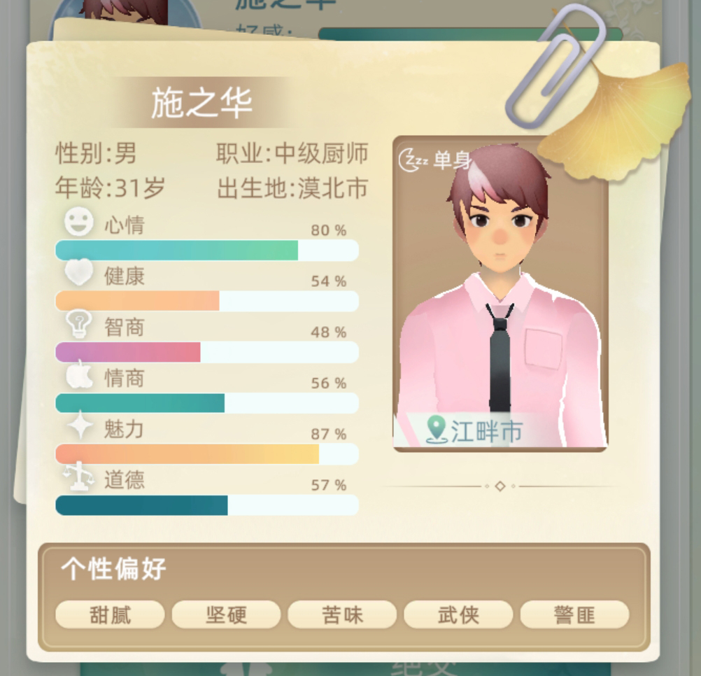

【当代人生预约开启】
Unity message will show here...
全新的界面，更多有趣的玩法等你发现
《第二人生》的续作《 当代人生 》就要和大家见面啦q(≧▽≦q) 《第二人生》从第一版上线到现在已经在taptap收获了160多万的关注。这一段慢慢成长的过程里一定有你的一份功劳，在这里我们十分感谢各位玩家能够支持和鼓励《第二人生》，有你们的支持才让我们在今天一起陪伴着大家。 今天趁着第二人生2预约之际，让我们一起看看2代相较于1代有什么新的变化吧~
- 游戏内的人物全部更换为3d模型，角色的人物形象相较于以前更加的鲜明直观，并且通过3d游戏还可以开发出不同的玩法和创意  ◎ 形象升级
- 对于之前比较热门的玩法在2带中进行了升级和完善，游戏中的部分玩法不单单只有文本提示还会有其他新的动画效果加入
 ◎ 玩法升级
◎ 玩法升级
- 游戏中的ui进行全面升级，将之前比较单调的ui重新绘制，使得游戏感观上对比与上一代体验更好
 ◎ UI升级
◎ UI升级
- 游戏添加了更多的活动交互，在 “每一年”中拥有更多的玩法内容和随机事件
 ◎ 交互升级
◎ 交互升级
当然啦，第二人生2还有很多内容正在开发中，我们在开发新内容的同时，也会进一步完善游戏的系统，把更好的游戏体验带给大家。我们也会持续给大家带来第二人生2的进展和动态，一定要关注哦！
当代人生官方QQ群：686929997
当代人生官方微博： 第二人生游戏